Siamo partiti da un'idea precisa: conservare al massimo lo spirito della villa. Soffitti molto alti, travi del 1800, un ambiente autentico e unico, che non andava snaturato.
Questa porzione di barchessa era però arredata secondo lo stile degli anni ottanta, con moquette, carta da parati e legni scuri, oltre a una cucina in muratura ormai datata. Il lavoro è stato togliere tutto ciò che la faceva invecchiare, senza perdere il carattere che la rendeva speciale.
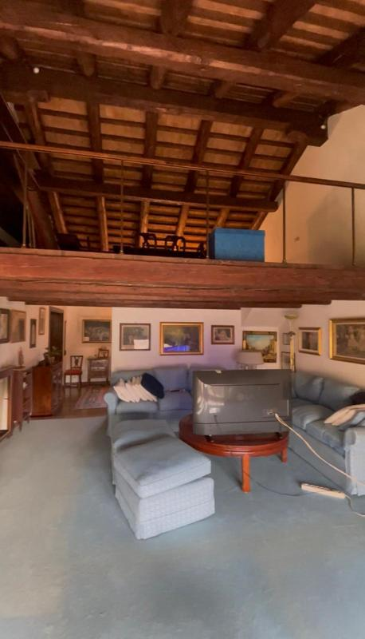
Soffitti alti e travi dell'Ottocento lasciate a vista: sono il cuore del progetto e tutto il resto è stato pensato per metterle in risalto.
Abbiamo tolto la carta da parati da tutte le stanze, la cucina in muratura e i muri più importanti, per riportare luce e ritmo in una casa che ne aveva perso.
Impianto di riscaldamento rifatto per intero, ma con radiatori e non a pavimento, per mantenere lo spirito di una villa antica.
Abbiamo abbattuto il muro grosso che separava l'ingresso dalla cucina, creando un solo spazio più aperto e pieno di luce.
Costruita ad hoc nello stile della precedente: un grande mensolone illuminato per gli utensili e una zona di colonne per nascondere tutto ciò che non deve vedersi. Elettrodomestici Samsung di alta qualità e cappa integrata nel piano a induzione, senza elementi sopra la cucina che interrompano lo stile antico.
Via piastrelle e vasche, dentro docce a filo pavimento e nicchie illuminate a LED per un'atmosfera calda e moderna. Piastrelle lunghe e strette, giallo, blu e arancio: un look retro con un tocco contemporaneo, pensato per il massimo comfort.
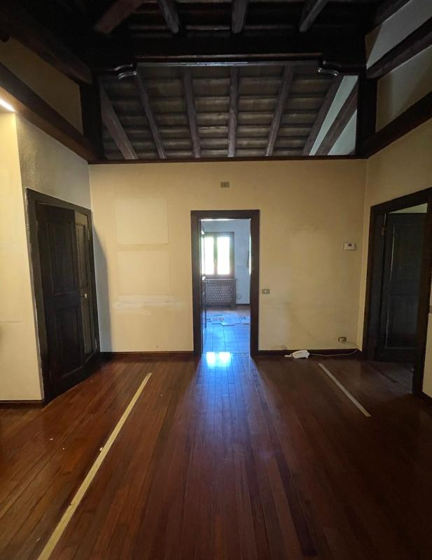
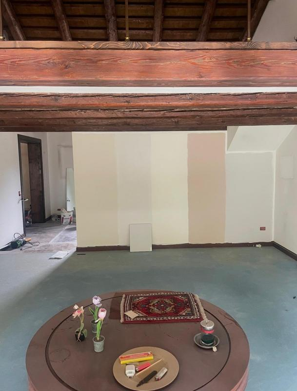
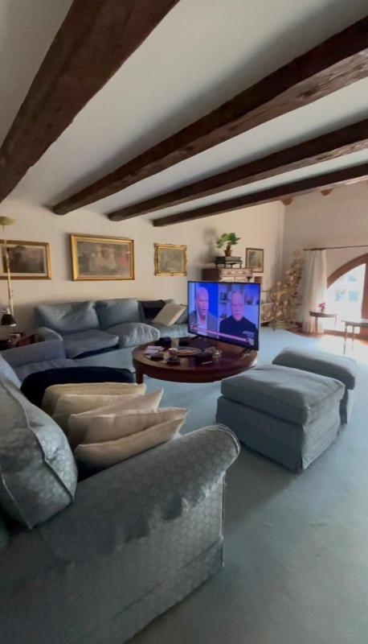
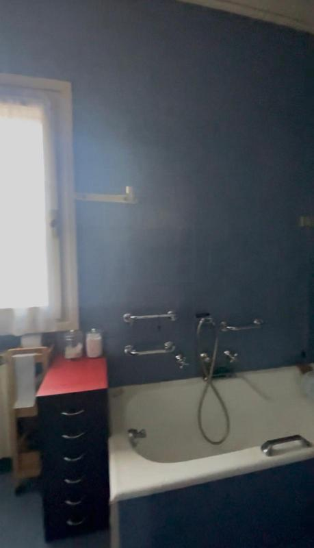
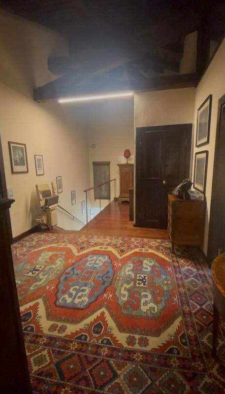
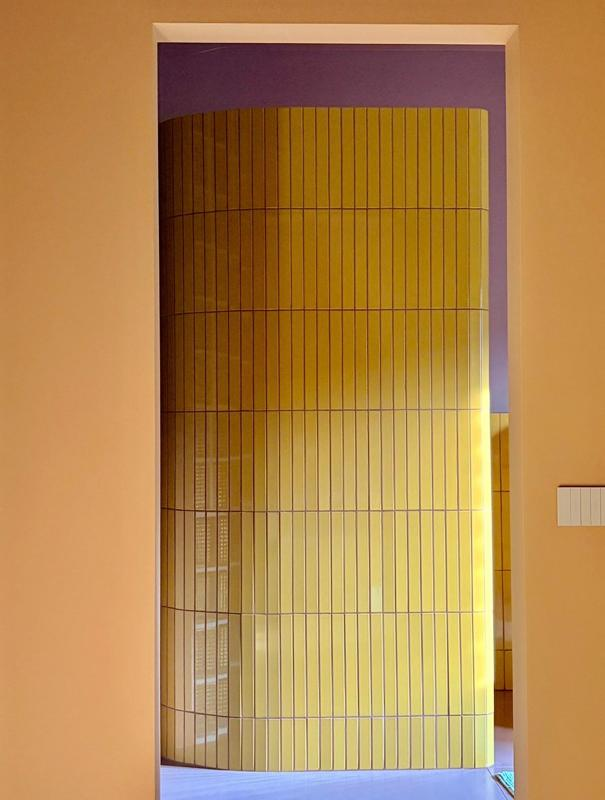

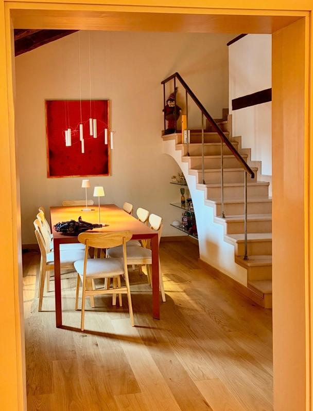
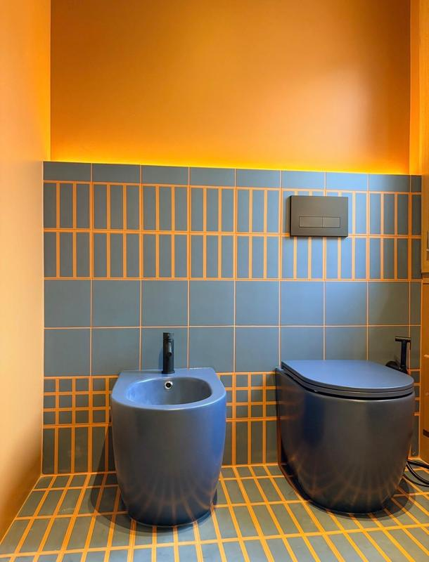
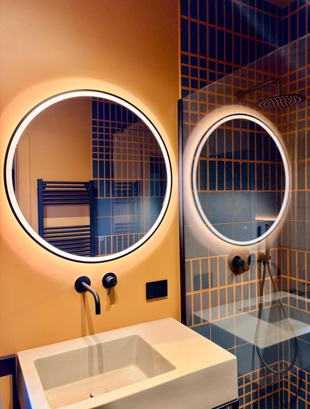
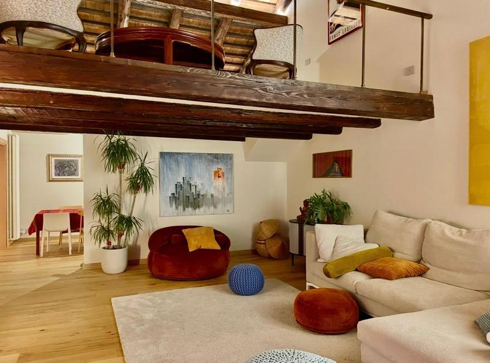